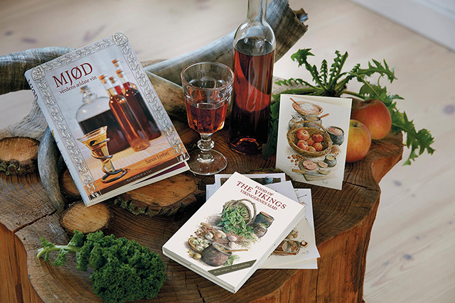

Om Viking Food
Det vilde bord
Vi er er rigtigt godt og solidt spisested i hjertet af Aarhus, hvor man kan spise god mad og drikke mjød. Sma - gene er tilpasset Vikingetiden og vi har i samarbejde med Moesgaard Museum og Vikinge Museet ud - viklet en menu som man spiste i år 950 i Danmark
Alt vores mad er skåret med økser og du spiser med sværd, skjold og hjem. Det er en nødvendighed at spise med fingrene og der igennem prøve at forstå Vikingetiden igennem maden og måden man spiser på.
Velbekomme!